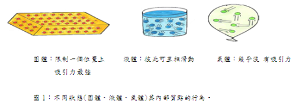
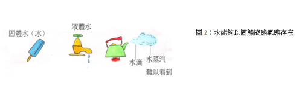
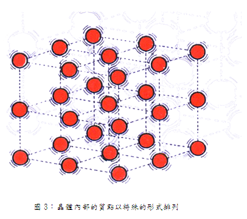
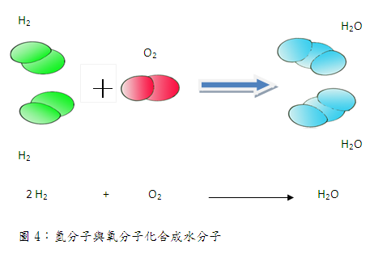

物質的質點論
科學家提出一個理論用來解釋固體、液體，和氣體的行為，這個理論非常重要，有一個特殊的名稱，叫做質點論。
一、質點論
所有的物質，均由非常細小的質點所構成。這些質點是非常小的，以
至於任何高倍的顯微鏡，都無法看到，但是科學家相信它們是存在的。這些質點彼此互相吸引且不停的運動，當物質受熱愈大時，質點之間的運動會愈來愈快。在固體中，這些質點幾乎被限制一個位置上，彼此間相距很近，所以彼此的吸引力最強。在液體中，質點之間的吸引力比固體弱很多，所以彼此可互相滑動，改變質點間的位置。而氣體內的各質點幾乎沒有吸引力，圖1所示的是科學家想像在固體、液體、氣體之內部的質點模型。
對於這些微小質點，科學家已正式稱它為原子或分子。分子有多大?看看一滴墨水，它包含了數百萬以上的墨水分子，所以一顆分子的大小比十億分之一公尺還小，也就是十億個分子連接的長度還不到一公尺長。
現在，我們將質點諭歸納成下面三點：
1.何物質都是由質點所構成。
2.質點不斷的在運動。
3.質點間具有吸引力。

二 、質點論的應用
科學家之所以相信質點論，主要原因是質點論在解釋物質性質時，非常有用，下列9題是一些物質物理變化及化學變化的例子。1-8題是屬於物理變化，第9題是化學變化。
例題1:試以質點論解釋物質的三態變化。
討論：
水化成水蒸汽或水凝結成冰等變化，稱為水之三態變化。
如圖2是水的三種狀態：固體、液體和氣體。冰中的水分子運動非常慢，而且彼此互相吸引在一起，形成冰棒的形狀。當冰棒受熱時，分子運動速度加快變得較為激動，最後分子彼此互相遠離，冰棒於是熔化了，固體的冰就變成液體的水了。最後當水開始沸騰時，水分子終於克服彼此間的吸引力而逃逸，水就變成蒸汽而以氣體方式，擴散到空氣中。水的三態變化其實只是水分子運動的快慢和水分子彼此間距離的變化，也就是水分子之間距離的拉近與遠離。但是水分子仍然是水分子，因此物質三態變化稱為物理變化。

例題2:試以質點論解釋固體的伸長和壓縮的彈性。
討論：
質點論也可以用來解釋固體具有伸長和壓縮的彈性。當拉長彈簧時，彈簧內的分子就被拉得互相遠離些，但是它們仍互相吸引著。稍後當你放手時，彈簧內的分子因互相吸引，又恢復再一起。
分子喜歡彼此互相接近，但是並不是非常接近，當你壓住一彈簧或是一乾海綿時，你一放手，它又恢復了原狀。分子是非常頑固的，它們總喜歡保持一個適當距離。晶體內的質點，形成特殊的排列，它們彼此互相吸引而維持晶體的形狀，如圖3所示是晶體內部質點排列的情形。
例題3:試以質點論解釋墨水在水中的顏色擴散。
討論:
質點論也可用來解釋墨水滴在水中的顏色擴散，因為墨水滴在水中，墨水分子受到水分子碰撞，將墨水分子撞到溶液各角落，使墨水分子擴散到溶液四方。

例題4:氣體為什麼會被壓縮?
討論:
氣體分子之間具有較大的空間，因此氣體能夠被壓縮。當氣體被壓迫時，分子就被壓迫在一起而占有較小的空間，有些氣體如果受到足夠的壓力就會轉變成液體。
例題5:氣體為什麼要保存在密封的容器內，香味飄揚為何是物理變化?
討論:
氣體中的分子，運動非常快，它們不會在既定的空間中聚集，而到處飄逸，這就是為什麼氣體必須裝在封閉容器保存的理由。又由於分子的快速運動，所以能夠擴散到更大空間，至於香味的飄揚，其實只是香水中的香味分于揮發到空氣中，然後迅速擴散到人類鼻于，在未被吸到鼻子前，香味分子仍是來香水中的香味分子，並沒有產生化學變化。
例題6試以質點論解釋糖溶於水只是物理變化。
討論：
糖溶於水只是糖分子鑽入水分子的空隙，糖分子和水分子並未發生化學變化，糖分子仍然是糖分子，水分子仍然水分子，因此糖溶於水是物理變化。
例題7:一些奇特的物質如膠狀物、水軟凍、未乾的油漆，它們是怎樣混合的?為什麼它們的混合是物理變化?
討論：
你己學過了所有的物質不外是固體、液體、氣體，但真的如此嗎? 許多物質卻是介於三者之間，似乎什麼也不是。如膠狀物、冰軟凍、未乾的油漆，它們既不是固體，也不是液體，它們是由兩種以上物質組成之非均勻狀態混合物。這兩種以上物質之分子彼此鑽入對方的空隙，它們之間並沒有發生化學變化，混合後的混合物也不很均勻，因此它們的混合是屬於物理變化。
例題8:液體被切斷後可以立即連在一起，為什麼固體被切斷後不會連接?訊以質點論解釋之。
討論:
此問題的中心是「連在一起」這一句話。如果是繩子或鐵鎖則接連的意思比較清楚，但液體連接到底指什麼狀態?若把液體放在容器內，則填滿整個容器，表面變成水平。若把容器穿一個洞，則水會不斷的滴出去。處於此種狀態的液體本身能否稱為已經連接，是稍有疑問的。「連接」這句本身能否適用於液體，並不明確。因此，所問的問題可能用下面敘述，較妥當。
「固體若用刀切即不會合在一起，一直保切斷的狀態，但是，若用刀把容器內的液體切開之後拿走刀，則液體保持原有的狀態，不會留下用刀的痕跡。兩者的差異應該如何說明?」
若想回答此問題，必須說明組成固體或液體的微粒子亦即分子或原子的集合狀態。
所謂固體，是指原子（或分子）有規則的排列的狀態。它與相鄰的原子以很強的力結合在一起，此力叫做化學結合力。因為這種化學結合力一旦斷掉，很難再結合於一起。所以固體被斷後不會再連接。
液體就不同了，液體的分子與分于之間以微弱的萬有引力彼此吸引:因此液體縱然暫時被分開，一旦重新在一起，彼此又馬上萬有引力互相結合在一起。因此固體切斷後不會再連切斷後，而液體切斷後可再結合在一起。
例題9:試以質點論說明化學變化。
討論:
前面所舉之問題都是在討論物理變化，現在我們來探討如何以質點論解釋物質的化學變化。
我們已學過物質在某些變化中會轉變成新的物質，這種新的物質已和原來的物質不同，這種變化叫做化學變化。例如:木材的燃燒。木材在燃燒後就變成灰和煙，因此化學變化的特徵是物質的組成發生了根本的改變，其他常見的化學變化，如:鐵的生鐮、汽油的燃燒、食物的消化等皆是。
我們如何以質點的觀點來看化學變化呢?
我們知道水分子是由兩個氫原子和一個氧原子所組成的。我們可以做如下的實驗把氫與氧結合成水，當氫氣通過玻璃管到空中時，空氣中的氧把氫氣點燃，則會產生淡藍色的火焰，這時拿一個冷的玻璃燒杯在火焰的上方，則會有水滴凝集在燒杯上，這就是氫和氧結合成水。但回顧燃燒前，氫氣和氧氣在空氣中都是以雙原子的分子形態存在。氫和氧兩分子結合成水的化學反應式如圖4。圖中每一小球代表一個原子，幾個小球聚成一堆，代表一個分予。從圖中我們可以看出化學變化有下列特點:
1. 反應前後分子種類改變了:圖4中反應前為兩個氫分子與一個氧分子，反應後變兩個水分子。
水分子的性質與氫分子或氧分子的性質均不相同。
2．反應前後各種原子的數目保持不變:圖中反應前有4個氫原子和2個氧原子，而反應後，2個水分子亦含有4個氫原子和2個氧原子。
